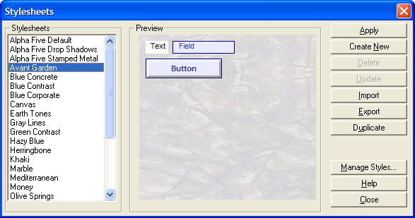
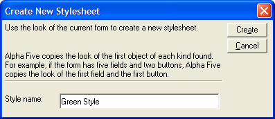
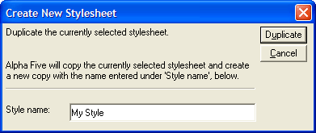

Stylesheets Dialog
Opening the Stylesheets Dialog
You can apply a Stylesheet to a layout in Design Mode using the Stylesheets dialog. To open the Stylesheets dialog:
In layout design mode, select Stylesheets > Apply or Create a Stylesheet.

Stylesheet Gallery
Using the Stylesheets Dialog
The left column of the Stylesheets dialog lists the available Style Sheets. Clicking on a stylesheet name displays a preview of the style sheet in the Preview pane. The right column lists the commands available.
Applying a Stylesheet to a Layout
To apply a selected Stylesheet to a layout:
Select the Style Sheet from the list and click the Apply button.
The layout is updated to reflect the Stylesheet formatting.
There are two ways to create a new Stylesheet. You can create a Style Sheet based on an open layout, or copy an existing Stylesheet. Copying Stylesheets lets you create variations without losing the original, and lets you modify the built-in Alpha Five Stylesheets.
To create a new Stylesheet based on the current layout:
Click the Create New button.
In the Create New Stylesheet dialog box, enter a Style Name for your new Stylesheet.

Entering a Style Name
To copy an existing style:
In the Stylesheets dialog, select the style you want to copy.
Click the Duplicate button.
Enter a Style Name for the new style and click Duplicate.

Enter a Style Name for the Duplicate
The new style appears in the Stylesheets dialog.
You can update an existing Stylesheet to reflect the formatting of a layout. Note : Updating a Stylesheet overwrites existing properties in the Stylesheet. You cannot update system Style Sheets.
To update an existing Stylesheet:
In the Stylesheets dialog, select the style you want to update.
Click the Update button.
Alpha prompts you to make sure you want to overwrite the Stylesheet.
You can delete user-created Stylesheets, but not the system Stylesheets.
To delete a Stylesheet:
In the Stylesheets dialog, select the style you want to delete.
Click the Delete button.
Alpha prompts you to makes sure you want to delete the Stylesheet.
See Also
Importing and Exporting Stylesheets, Managing Style Properties